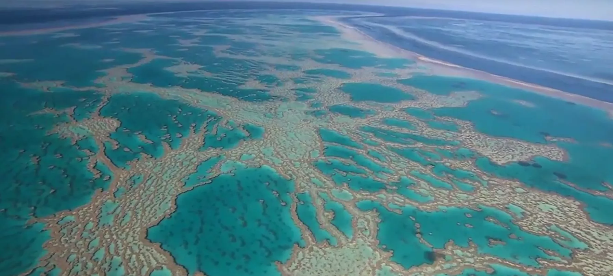
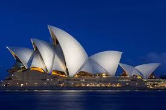
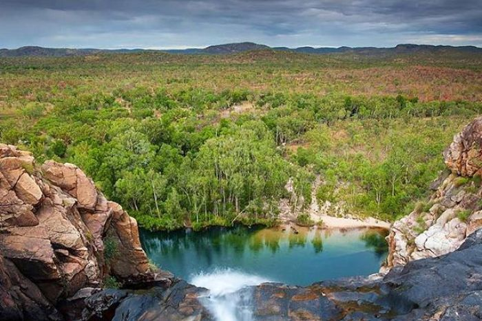

Pontos turisticos
-
Grande Barreira de Corais
A maior barreira de corais do mundo, localizada na costa de Queensland, é um paraíso para os amantes do mergulho e snorkeling, oferecendo uma rica diversidade marinha e paisagens subaquáticas deslumbrantes.
-

Um dos marcos mais reconhecíveis da Austrália, esse magnífico edifício é um centro cultural e artístico que oferece espetáculos de classe mundial e vistas deslumbrantes da baía de Sydney.
-
Ayers Rock (Uluru)

Localizado no Parque Nacional Uluru-Kata Tjuta, este impressionante monólito de arenito é sagrado para os povos aborígenes australianos e oferece uma experiência única ao pôr do sol, quando suas cores mudam dramaticamente.
-
Great Ocean Road
.jpg)
Uma das estradas costeiras mais cênicas do mundo, oferece vistas deslumbrantes das formações rochosas conhecidas como Doze Apóstolos, além de praias pitorescas e florestas exuberantes.
-
Parque Nacional Kakadu
Lar de uma extraordinária variedade de vida selvagem e paisagens naturais, este parque abriga antigas pinturas rupestres aborígenes, deslumbrantes cânions, cachoeiras e uma rica herança cultural.